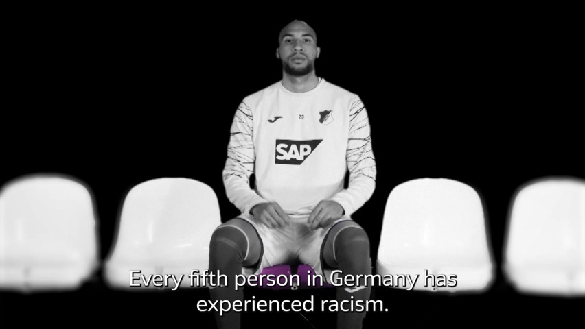
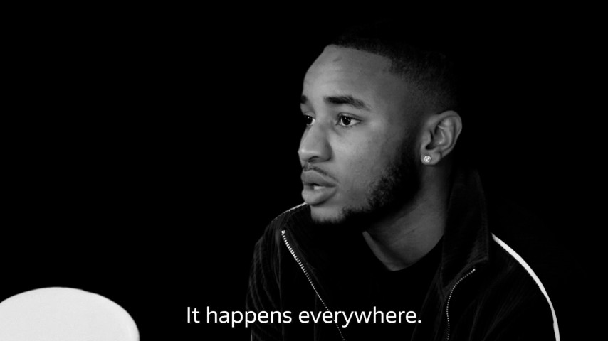

Advertising movie to enlighten people about the fact that one out every five people living in Germany have ever experienced racism.
Creative Director: Gabriel Mesquita
Art Director: Felipe Martins
Screenwriter: Nick Müller-Hohenstein
Video Editor / Motion: Lucas Klepa
Account Manager: Joris Schwitalla
Agency: M&C Saatchi Sport & Entertainment GmbH
Client: Bundesliga / DFL